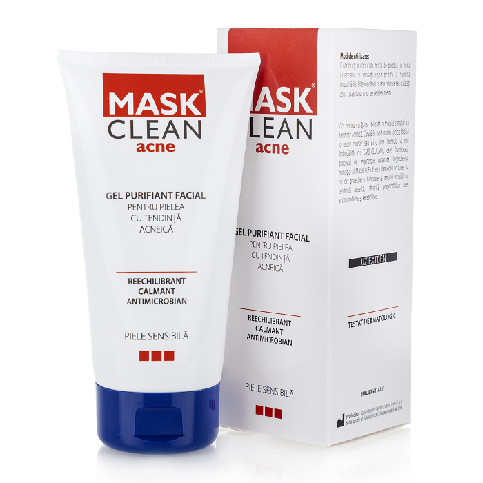
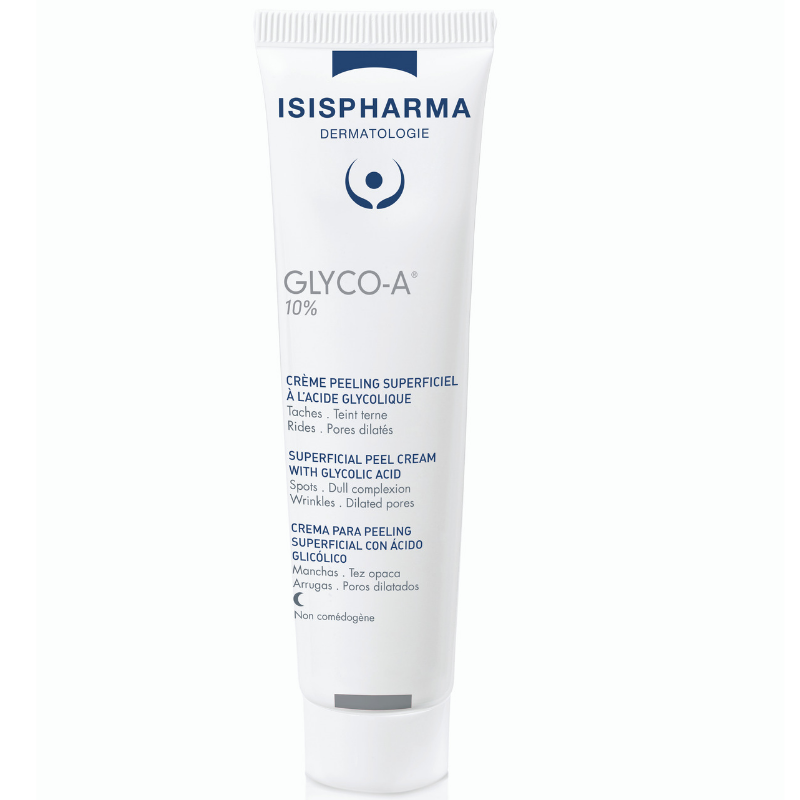
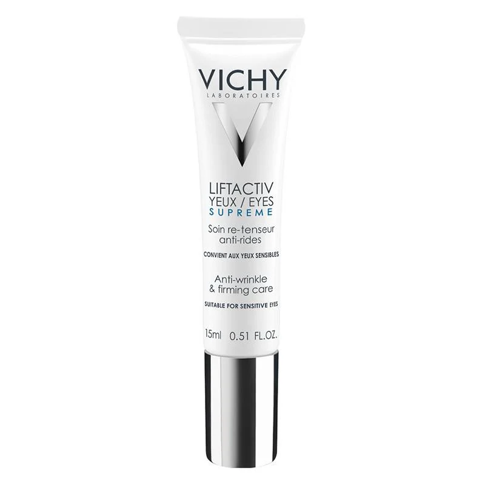

Îngrijirea pielii, stabilirea unei rutine și respectarea acesteia sunt bazele obținerii unui ten curat, sănătos și luminos. Aici puteți găsi sfaturile mele în materie de skincare ♡
Îngrijirea pielii, stabilirea unei rutine și respectarea acesteia sunt bazele obținerii unui ten curat, sănătos și luminos. Aici puteți găsi sfaturile mele în materie de skincare ♡
♡ Produsele mele preferate ♡
Gelul purifiant facial de la Mask Clean Acne
Crema cu acid glicolic de la Isispharma
Crema pentru ochi Liftactiv de la Vichy
  Folosesc acest gel de curățare de mai bine de un an și tot ce pot să spun este că este cel mai bun pe care l-am încercat pana acum. Este singurul care îmi curăță pielea în profunzime, dar nu este agresiv si nu îmi irită pielea
Am început să folosesc acestă cremă de tip peeling acum 3 luni și am văzut doar rezultate bune. Trebuie știut faptul că deoarece conține acid glicolic poate irita pielea la primele aplicări. Recomand folosirea ei doar seara, deoarece provoacă sensibilitate la soare.
Sunt 6 luni de când am început să folosesc o cremă pentru ochi, iar rezultatele sunt vizibile. Deși nu ajută cu cearcănele netezește și întinde foarte bine pielea din jurul ochilor, lăsând o senzație catifelată.
SFATURILE SEZONULUI
A venit primăvara, și odată cu aceasta, apare și expunerea la soare. Deși soarele nu este atât de puternic, protecția solară nu se poartă doar vara deoarece tenul trebuie protejat în permanență. În plus, marele beneficiu al protecției solare este proprietatea de antirid.
Indiferent de tratamentele pe care le faci, pielea are mereu nevoie de hidratare. Un mod bun prin care să nu uiți să îți hidratezi tenul este să porți mereu cu tine un spray hidratant, varianta travel size. Eu folosesc apa termală de la Avene .
Pentru a vedea cu adevărat rezultate, este important să stabilești o rutină și niște produse pe care să le respecți cu strictețe. Deși este tentant să încerci mereu produse noi, tenul tău posibil să nu reacționeze într-un mod foarte plăcut. Respectă-ți rutina, iar tenul tău îți va mulțumi!
created with
HTML Website Builder .